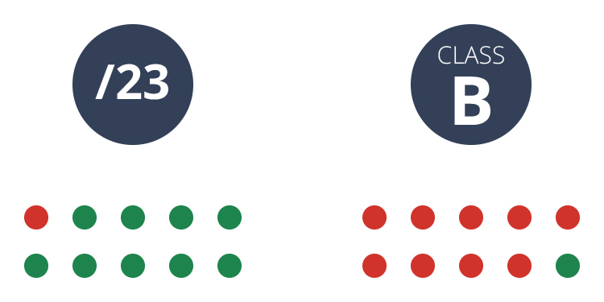
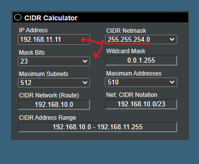
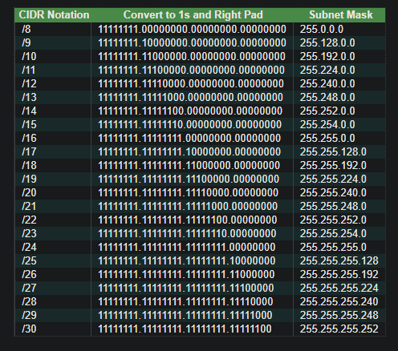

| What is classless IP addressing
- If you don’t have any idea about classful IP addressing then check this out: How classful (IP) addressing works
At a high level, classless addressing works by allowing IP addresses to be assigned arbitrary network masks without respect to “class.” That means that we’re no longer tied down to /8, /16, and /24 as our only options, and that’s where classless addressing gets very interesting.
In a Classless addressing system the block of IP addresses is assigned dynamically based on specific rules.
A classless addressing system is represented in terms of the block. A block is a group of IP addresses.
p.q.r.s /n = where p.q.r.s represents the IP address, and n represents the mask bits.
Example: If we need 500 IP addresses, using a subnet calculator, tells us we need /23 block. /23 gives us 510 usable host addresses. That means by switching to classless addressing, we’ve avoided wasting over 65,000 addresses.

The fundamental difference between classless subnetting and classful subnetting
Consider the IP address 192.168.11.11. With classful IP addressing, you know it’s a Class C address. That means you also know the network mask is 255.255.255.0 (/24). In a classful address, the format of the IP address implies the network mask. There’s no option.
However, with classless addressing, knowing the IP address alone does not imply you have the network mask. You need to be explicitly told what it is.
Calculate classless subnet mask
In order to reduce the wastage of IP addresses a new concept of Classless Inter-Domain Routing(CIDR) is introduced.
You can use this tool to calculate classless subnet mask → https://www.subnet-calculator.com/cidr.php

The process to determine the subnet mask for a CIDR address is straight forward. The number of bits in the network portion of the address are converted to 1s and right padded with 0s until there are 32 numbers. The sequence of numbers is then divided into 4 octets. From then, it is a matter of converting the 4 octets from binary to decimal.

What are the advantages of classless addressing
- More IP address allocations:
- More efficient routing:
- More balanced use of IP address ranges:
- Variable Length Subnet Mask:
We know IPv6 is our long-term IP address solution to the IP address exhaustion problem. However, IPv6 is not yet widely used. Classless addressing was used as a medium-term solution to help us stretch the life of IPv4.
During classless routing, it requires less bandwidth.
Classless addressing decoupled the relationship between network size and IP address and allowed for balanced use across what used to be the Class A, B, and C ranges. Far less wasted addresses.
Design strategy where all subnet masks can have varying sizes. This process of "subnetting subnets" enables network engineers to use multiple masks for different subnets of a single class A, B or C network.
- However, the advantages of classless addressing far outweigh the complexity trade offs. As a result, classless addressing has become a fundamental part of how subnetting—and even the Internet—work.
- Source: auvik | byjusexamprep | geeksforgeeks | geeksforgeeks | erikberg
- Wrote: November 27, 2022 | Azar 6, 1401
- Updated: December 4. 2022 | Azar 13, 1401
- Posted: November 27, 2022 | Azar 6, 1401